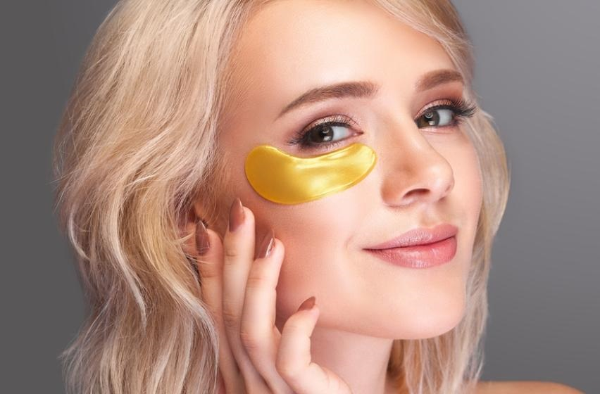

На этой страничке вы можете найти полезные советы, факты и рекомендации, как правильно ухаживать за кожей. Найдите нужную статью и читайте с удовольствием!

Патчи: есть ли от них польза?
Патчи — один из самых востребованных и в то же время спорных продуктов для ухода за лицом. Уже который год они не выходят из тренда и продолжают собирать вокруг себя огромное количество мифов и вопросов.
Кокосовое масло – продукт противоречивый, и новые рекомендации Американской ассоциации кардиологов вызывали еще больше споров. Так что ж в итоге – оно суперполезно или супервредно?
Кожа – самый большой орган человеческого тела, здоровье которого видно невооружённым взглядом. Поэтому за ней так важно ухаживать в любом возрасте. Учимся определять тип кожи в данной статье.